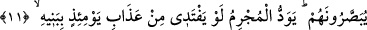

göre âyet-i kerîmenin mânâsı şöyle olur: Gök erimiş mâden gibi olduğu o gün, târife
sığmayacak hâller ve korkular olur.
9. Dağlar da atılmış yüne döner.
“
/el-Ihn” kelimesi, renkli ve boyanmış yün demektir. Nitekim aynı ifâde bir başka
âyet-i kerîmede şöyle yer alır: “İnsanların ateşin etrâfını sarmış pervaneler gibi
olduğu, dağların da atılmış renkli yüne dönüştüğü gündür (o karia)” (el-Karia,
101/4-5).
“el-Ihn” kelimesinin bilhassa ifâde edilmesinin sebebi, içerisindeki renkten
dolayıdır. Nitekim aynı gerçek bir başka âyet-i kerîmede şöyle dile getiriliyor: “Gök
yarılıp da kızarmış yağ renginde gül gibi olduğu zaman” (er-Rahman, 55/37). Buna
göre üzerinde durduğumuz âyet-i kerîmenin mânâsı; dağlar çeşitli renklerde olan atılmış
yün gibi olur. Çünkü dağlar çeşitli renklerdedir. Nitekim bu gerçeği Cenâb-ı Hak şöyle
vurgular: “Görmedin mi Allah gökten su indirdi, onunla renkleri çeşit çeşit
meyveler çıkardık, dağlardan (geçen) beyaz, kırmızı, değişik renklerde ve simsiyah
yollar (yaptık).” (Fatır, 35/27). İşte dağlar, parçalanıp boşlukta uçurulduğunda, rüzgârın
uçurduğu atılmış renkli yünlere benzeyeceklerdir.
Keşfü’l-esrâr’da denir ki: Dağlar ilk değiştiğinde akan kum gibi olacaklardır. Sonra
atılmış renkli yünlere dönecekler, ardından da toz duman hâline geleceklerdir.
10. Dost, dostu sormaz.
Yâni hiçbir akraba diğerinin hâlini sormaz ve onunla konuşmaz. Çünkü her bir akraba
kendi canının derdine düşmüş, kendisi ile meşguldür. Akrabalar arasında durum bu
olduğuna göre birbiriyle akrabalık bağı olmayan yabancıların durumu ne olacaktır varın
siz hesap edin!
“Hamîm: Yakın akraba, dost” kelimesinin elif-lâmsız olarak getirilmesi, genellik
ifâde etmesi içindir. Yâni hiçbir dost, hiçbir dostunu sormaz!
11. Birbirlerine gösterilirler (fakat herkes kendi derdindedir). Günahkâr kimse